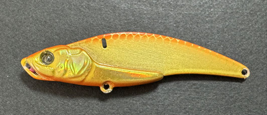
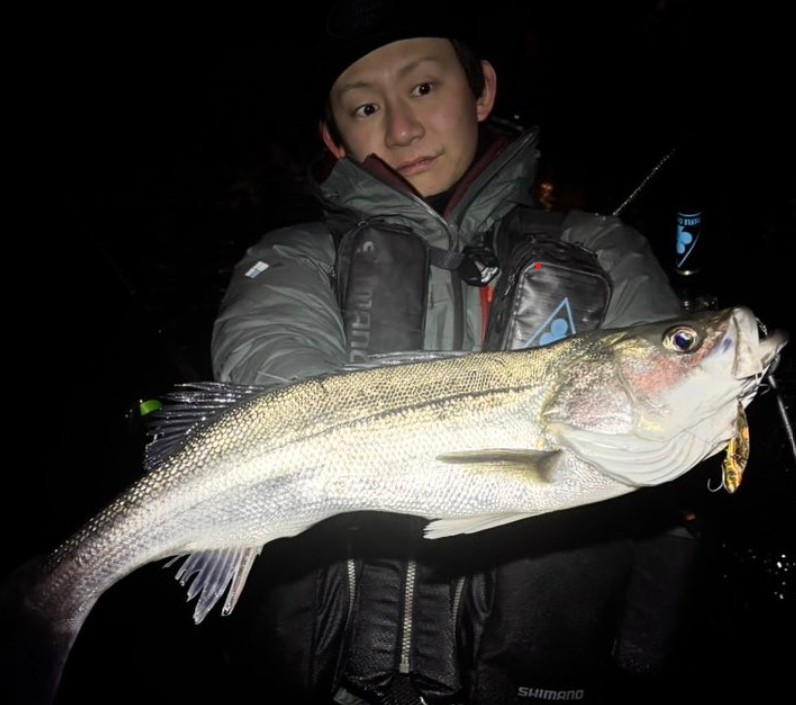
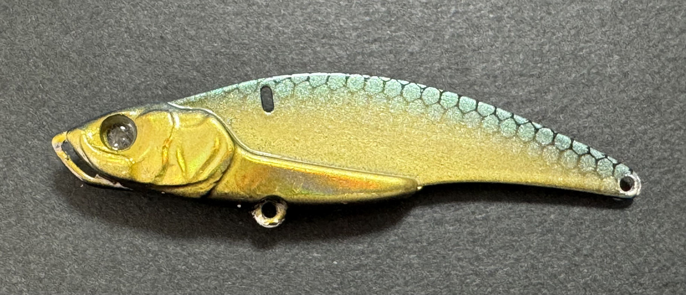
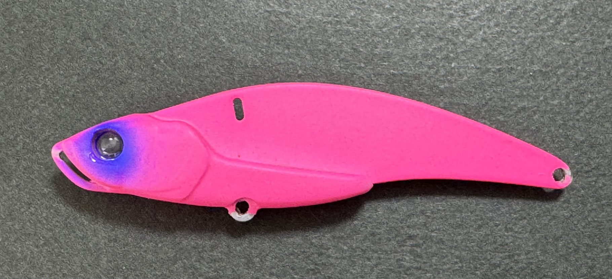
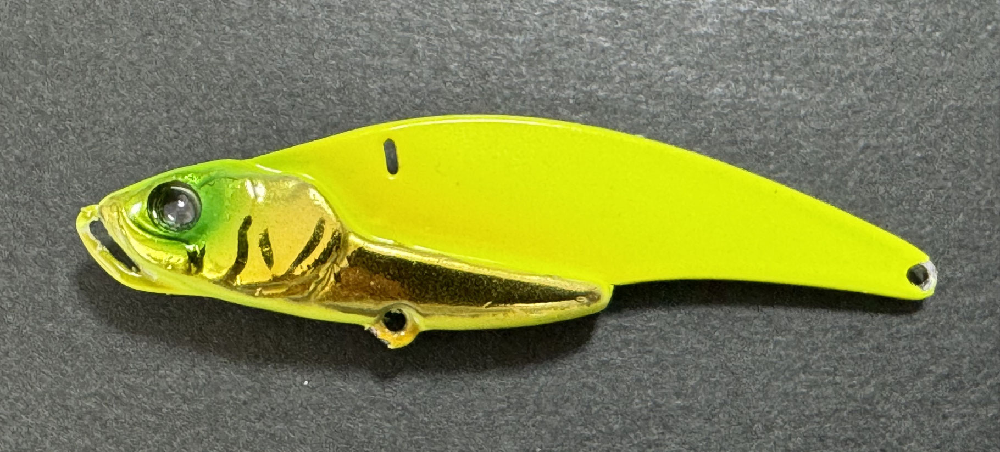

ラナケラ57-13S(LANAKERA)
ラナケラ57はトレフルクリエーションが2026年に発売した新作ルアーです。
”魚に人間を感じさせない”がコンセプトの鉄板バイブです。

- メーカー
- TREFLE CREATION
- 長さ
- 57 mm
- 重さ
- 13 g
- フック
- ＃8ｘ2
- タイプ
- シンキング
- アクション
- バイブレーション
- ターゲット
- シーバス
- 価格
- 1,320円(税抜)
- 発売日
- 2026年月2月
- 開発者
- 大坊 重哲
ラナケラ57の特徴
ラナケラは鉄板バイブには珍しい、「水中でのラインノイズ」というのを抑えた、比較的波動が抑えめなバイブレーション。スレたフィールドで真価が現れる。
-
ラインノイズの抑制
ラインの振動を抑えた設計で、アピールではなく「食わせ」に特化。低活性な魚やスレた魚が多いフィールドや状況で活躍。
-
ライントラブルの少なさ
エビりにくい設計で、チャンスを逃さない。
ラナケラの使い方・得意な状況
ラインノイズの少なさから魚に気づかれずに釣ることができるので、スレたハイプレッシャーなフィールドでも強いのが特徴。
ほかの鉄板バイブほどのアピール力はないが、食わせ能力が高いため、手元にあまり伝わっていなくても水中では十分アクションしている。
ゆっくりめのただ巻きとリフトアンドフォールで低活性のシーバスを狙おう。
ワンポイント
3日間で90アップのシーバスを3匹、今年もメーターシーバスや激戦区東京湾でのランカーなど釣果実績抜群の鉄板バイブレーションルアーです。

画像出典:X 大坊 重哲(風来)
人気カラー

トレフル緑金ベリーには黒を配した濁りが入った時にしっかりアピールするカラーです。

マットピンク東京湾周辺でかなりの釣果を上げて来たマットピンク
ギャラクシーブラック
釣れない時に何故か救われるカラー。お守りにどうぞ

ゴールドチャートチャートにゴールドのアクセントを足したアピール力No.1カラー
画像出典:TREFLECREATION公式HP
ラナケラに似ているルアー
- CANNA15
- 鉄PAN VIBE